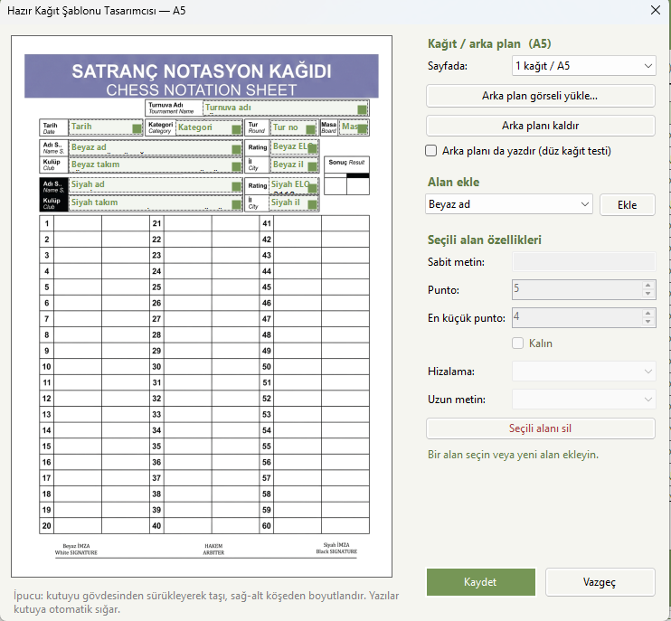

Notasyon Yazdırıcı
Eşleştirmeleri chess-results'tan alır; notasyon kâğıtlarını, hakem eşleştirme kağıtlarını, salon listelerini, yaka kartlarını ve masa kartlarını dakikalar içinde hazırlayıp yazdırır.
Windows için indir
Turnuvanın bütün basılı evrakı tek programda
Turnuvayı seçin, turu seçin, yazdırın. Kategoriler, turlar ve sporcu bilgileri chess-results'tan otomatik gelir; elle veri girmeye gerek kalmaz.
Notasyon kâğıtları
Masa, tur, oyuncu adları, rating ve il bilgisi hazır basılı kâğıda yerleştirilir. İsviçre, Berger ve takım turnuvaları desteklenir.
Hakem eşleştirme kağıtları
Büyük yazılı, sonuç kutulu kağıtlar; isteğe bağlı ceza bildirim formuyla aynı sayfada.
Salon listeleri
Her kategorinin eşleştirme, sonuç ve sıralama listeleri pano için A4'e hazırlanır.
Yaka kartı ve isimlik
Sporcu, hakem ve görevli kartları. Her kategori kendi renginde; UKD ve ELO bilgisiyle.
Masa kartları ve salon levhaları
Afişli kategori masa kartları; inceleme masası, kayıt kontrol, WC, sporcu girişi-çıkışı ve yönerge levhaları yön oklarıyla; yasak levhası.
Yönerge, rapor ve tutanaklar
Turnuva bilgileriyle doldurulan hazır şablonlar; PDF, yazıcı ya da Word çıktısı.
Hazır basılı kâğıda tam yerleşim
Programın temel işi: her masanın notasyon kâğıdını, elle yazmaya gerek bırakmadan doldurmak. Bilgilerin kâğıdın hangi kutusuna yazılacağı şablon tasarımcısında görülür ve ayarlanır.
- Turnuva adı, tarih, kategori, tur ve masa numarası ile iki oyuncunun adı, ratingi ve ili tek seferde basılır.
- Hazır şablonlar yaygın kullanılan A5 notasyon kâğıtlarına göre ayarlıdır.
- Farklı bir kâğıt için alan konumları şablon düzenleyiciden sürükle-bırak ile değiştirilir.
- Yazıcı kayması milimetre olarak düzeltilir; hizalama test sayfasıyla boş kâğıtta denenir.
- Seçilen masalar, bütün kategori ya da bütün tur tek tıkla basılır.

Örnek çıktılar
Aşağıdaki görseller programın kendi çıktılarıdır; büyütmek için üzerine tıklayın. Örneklerdeki turnuva ve sporcular hayalîdir.
Kurulum
- Windows için indir düğmesiyle kurulum dosyasını indirin.
- Dosyayı açın. Program kurulur; masaüstüne ve Başlat menüsüne Notasyon Yazdırıcı kısayolu eklenir.
- Yeni sürümler program içinden bildirilir; yalnızca değişen kısımlar indirilir. Ayarlarınız ve şablonlarınız korunur.
Sık sorulan sorular
Notasyon Yazdırıcı ücretli mi?
Hayır. Program ücretsizdir; kaynak kodu GitHub'da açıktır.
Eşleştirmeler nereden alınır?
Turnuva chess-results üzerinden aranır ve eşleştirmeler otomatik alınır. İnternet olmadan JSON, CSV veya Excel dosyasından da yüklenebilir.
Hangi notasyon kâğıtlarıyla çalışır?
Hazır şablonlar yaygın kullanılan A5 notasyon kâğıtlarına göre ayarlıdır. Farklı bir kâğıt için alan konumları şablon düzenleyiciden değiştirilir ve yazıcı kayması milimetre olarak düzeltilir.
Güncellemeler nasıl yapılır?
Yeni sürüm program içinden bildirilir; yalnızca değişen kısımlar indirilir. Ayarlar ve şablonlar korunur.